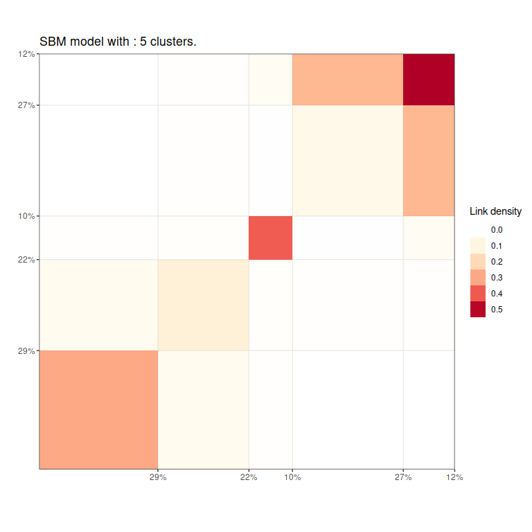
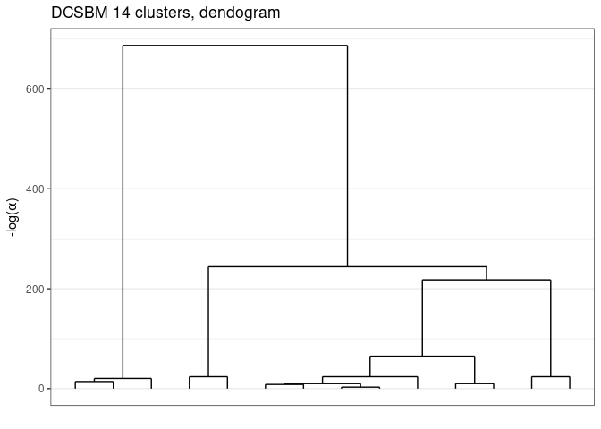
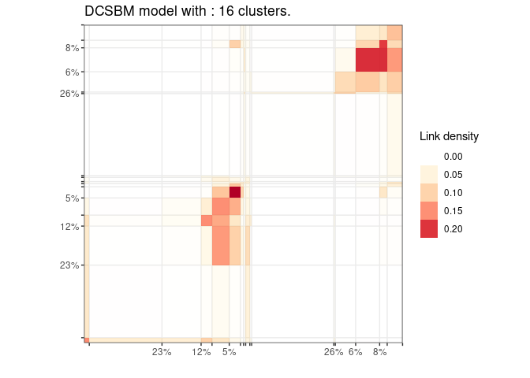

Greed enable model based clustering of networks, counts data matrix and much more with different type of generative models. Model selection and clustering is performed in combination by optimizing the Integrated Classification Likelihood. Details on the algorithms and methods proposed by this package can be found in this pre-print https://arxiv.org/abs/2002.11577v1.
The following generative models are available currently :
- Stochastic Block Models (for directed and un-directed graphs, see
?`sbm-class`), - Degree Corrected Stochastic Block Models (for directed and un-directed graphs, see
?`dcsbm-class`), - Stochastic Block Models with Mutlinomial observations (experimental, see
?`multsbm-class`), - Degree Corrected Latent Block Models (see
?`co_dcsbm-class`), - Mixture of Multinomials (see
?`mm-class`), - Gaussian Mixture Model (experimental, see
?`gmm-class`), - Multivariate Mixture of Gaussian Regression Model (experimental, see
?`mvmreg-class`).
With the Integrated Classification Likelihood the parameters of the models are integrated out and therefore introduces a natural regularization for complex models. Since the Integrated Classification Likelihood penalize complex models it enable to automatically find a “natural” value for the number of cluster K*, the user needs only to provide an initial guess and value for the prior parameters (sensible default values are used if no prior information is available). The optimization is performed by default thanks to a combination of greedy local search and a genetic algorithm, several optimization algorithms are available.
Eventually, the whole path of solutions from K* to 1 cluster is extracted. This enable a partial ordering of the clusters, and the evaluation of simpler clustering. The package also provides some plotting functionality.
Installation
You can install the released version of greed from GitHub with:
install.packages("devtools")
devtools::install_github("comeetie/greed")Usage
The main entry point for using the package is simply the greed function (?greed). The generative model will be chosen automatically to fit with the data provided, but you may specify another choice with the model parameter. This is a basic example with the classical blogs network:
library(greed)
data(Jazz)
sol=greed(Jazz)
#> ------- Fitting a DCSBM model ------
#> ################# Generation 1: best solution with an ICL of -29423 and 16 clusters #################
#> ################# Generation 2: best solution with an ICL of -29353 and 21 clusters #################
#> ################# Generation 3: best solution with an ICL of -29305 and 22 clusters #################
#> ################# Generation 4: best solution with an ICL of -29298 and 21 clusters #################
#> ################# Generation 5: best solution with an ICL of -29295 and 21 clusters #################
#> ################# Generation 6: best solution with an ICL of -29293 and 21 clusters #################
#> ################# Generation 7: best solution with an ICL of -29293 and 21 clusters #################
#> ------- Final clustering -------
#> ICL clustering with a DCSBM model, 20 clusters and an icl of -29268.Here Jazz is a square sparse matrix and a ?`dcsbm-class` model will be used by default. Some plotting function enable the exploration of the clustering results:
plot(sol)
And the hierarchical structure between clusters:
plot(sol,type='tree')
Eventually, one may explore some coarser clustering using the cut function:

For large datasets, it’s possible to use parallelism to speed-up the computation thanks to the future package. You only need to specify the type of backend you ant to use.
library(future)
plan(multisession)
data("Blogs")
sol=greed(Blogs$X)
#> ------- Fitting a DCSBM model ------
#> ################# Generation 1: best solution with an ICL of -84448 and 16 clusters #################
#> ################# Generation 2: best solution with an ICL of -84255 and 18 clusters #################
#> ################# Generation 3: best solution with an ICL of -84232 and 19 clusters #################
#> ################# Generation 4: best solution with an ICL of -84196 and 18 clusters #################
#> ################# Generation 5: best solution with an ICL of -84196 and 18 clusters #################
#> ------- Final clustering -------
#> ICL clustering with a DCSBM model, 17 clusters and an icl of -84137.
plot(sol)